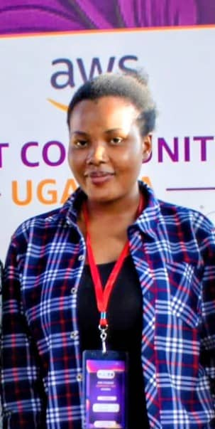
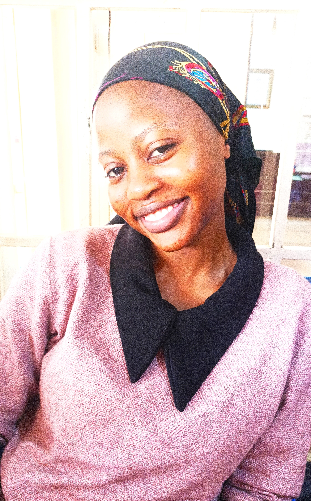
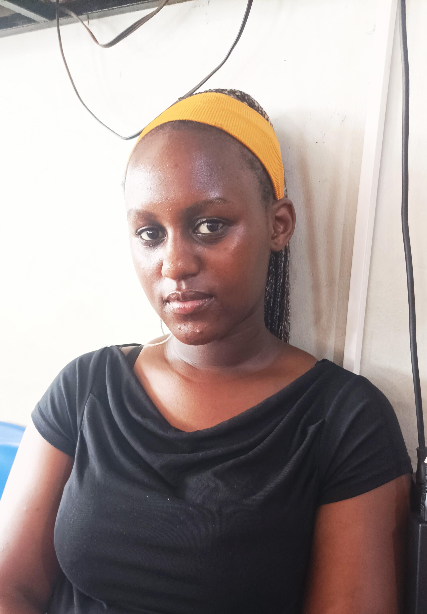

About the Department
We are the pioneers of digital excellence at Bugema University. Our department blends theory with hands-on practice, producing graduates ready for the global tech stage. We focus on artificial intelligence, cybersecurity, and software development.
With modern labs and dedicated lecturers, every student builds a strong portfolio. The department also runs coding bootcamps, hackathons, and industry workshops. Your future in tech starts here.
Our Mission
To provide quality, innovative, and Christ-centred education in computing and informatics that equips students with practical skills for technological advancement and service to the community.
Our Vision
To be a leading centre of excellence in computing education, research, and technology-driven solutions in the East African region and beyond.
Brief History
The Department of Computing & Informatics was established in 2005 as part of the Faculty of Science & Technology. Starting with a single programme in Information Technology, the department has grown to offer five degree programmes at both undergraduate and postgraduate levels. Today, we serve over 400 students with a team of 15+ dedicated faculty members.
Weekly Timetable
| Course | Day | Time |
|---|---|---|
| Data Structures & Algorithms | Monday | 09:00 – 11:00 |
| Database Systems | Monday | 12:00 – 14:00 |
| Web Development | Tuesday | 10:00 – 13:00 |
| Operating Systems | Wednesday | 09:00 – 11:00 |
| Python Programming | Thursday | 14:00 – 17:00 |
| Discrete Mathematics | Friday | 08:00 – 10:00 |
Student Profiles
Meet some of our current students and learn what makes their experience at the department unique.
Joshua Agaba
Passionate about mobile app development and UI/UX design. Leads to Google Developer Student Club and enjoys mentoring freshmen.
Top Movies
- The Social Network
- Black Panther
- Snowden

Bonheur Byamungu
Network security enthusiast specializing in cloud infrastructure and enterprise systems. Cisco certified and leads the campus cybersecurity club.
Top Movies
- War Games
- The Matrix
- Snowden

Lucky Nanyombi
Interested in cybersecurity and data science. Serves as treasurer of Computing Students Association and volunteers in community coding bootcamp.
Top Movies
- Hidden Figures
- Interstellar
- Queen of Katwe

Prudence Ngira
Full-stack web development enthusiast who has built projects for local businesses. Active open-source contributor and co-founded campus hackathon team.
Top Movies
- Spider-Man
- The Matrix
- Avengers: Endgame